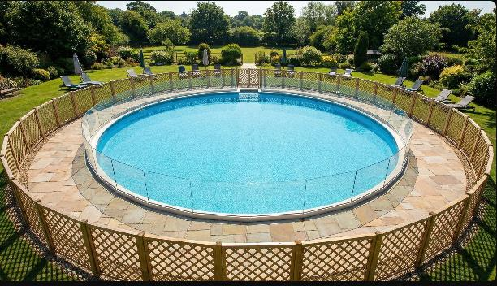

פארק המזרקה
102
שאלה מתוך תוכנית הלימודים
שאלת סיכום:
שם המשימה: "פארק המזרקה" – המכרז העירוני
עיריית "מי-ים" החליטה להקים פארק מים עירוני חדש בצורת עיגול במרכז העיר. הפארק יורכב משני מעגלים בעלי מרכז משותף (צורת "טבעת"):
- המעגל הפנימי: בריכת מים גדולה ומזרקות.
- הטבעת החיצונית: טיילת הליכה מרוצפת אבן המקיפה את הבריכה.
- גדר בטיחות: תוצב מסביב למעגל הפנימי (כדי שילדים לא ייפלו למים) ומסביב למעגל החיצוני (תיחום הפארק).

נתונים כלכליים (מחירון הקבלן): כדי לזכות במכרז, עליכם לחשב עלויות במדויק. שימו לב להבדלי המחירים העצומים בין החומרים:
- הקמת בריכת מים (איטום ומערכות) 1,000 ₪ למ״ר (יקר מאוד!).
- ריצוף אבן (טיילת) 100 ₪ למ״ר.
- גדר בטיחות מעוצבת 50 ₪ למטר אורך.
השאלות
חישוב ותכנון (שליטה במיומנויות)
האדריכלית הראשית הגישה תוכנית ראשונית:
- רדיוס בריכת המים (הפנימי) = 5 מטרים.
- רוחב הטיילת (הטבעת) = 2 מטרים (כלומר, הרדיוס החיצוני הכולל הוא 7 מטרים).
1.חישוב שטחים
א.חשבו את שטח בריכת המים
ב.חשבו את שטח הטיילת בלבד (שטח הטבעת – ההפרש בין העיגול הגדול לקטן).
חישוב גדרות: מהו האורך הכולל של הגדרות הנדרשות לפרויקט? (שימו לב: יש לגדר גם את הבריכה הפנימית וגם את המעגל החיצוני).